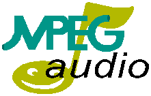

- software -
All Acespade's software are protected by Copyright Law. . Poker Software, Blackjack Software, Video Poker Software . Intelligent Poker Software, Blackjack Software, Video Poker Software . Pro 2002 versions of Texas Hold'em software are now available.
 |
|
A dance instuctor's dream, AMPS allows you to run your dance sessions like never before. Maybe you are a person that wants all of your music available anytime, anywhere. Programmers use our tools to write interfaces to radio station software, games, multimedia presentations, and more. You shouldn't settle for lack of perfomance and low reliability with your audio software. . |
|  |
With this player you can view thousands of video and audio clips including TV and Radio shows, news, movies and more. . Free Demo Software Video Editing, Effects and Streaming Player If you need help with the software below, contact tech support at the manufacturer's web site. You can also post a question or answer on the appropriate Video University Forum. 00 Fully functional for compressing media for CD-ROMs, DVD-ROMs, intranets, or the Web. |
 |
Topics covered include the JUNOS CLI, CLI navigation, operation and configuration modes, interface and routing protocol setup in addition to real-time examples. For more educational resources covering Juniper Networks products, please visit www. The goal of this presentation is to establish basic understanding of the JUNOS software to help customers facilitate rapid installation and operation of a Juniper Networks router in the network. Topics covered include methods available to access JUNOS software and initiating the Command Line Interface (CLI). Topics covered include the JUNOS configuration hierarchy, candidate configuration, key configuration commands such as commit and rollback, commands for modifying interface and routing parameters in addition to JUNOS software configuration demonstrations. |
A site I really like: http://www.cnet.com/software/0-3662.html?tag=st.wn.4235214.dir.3662